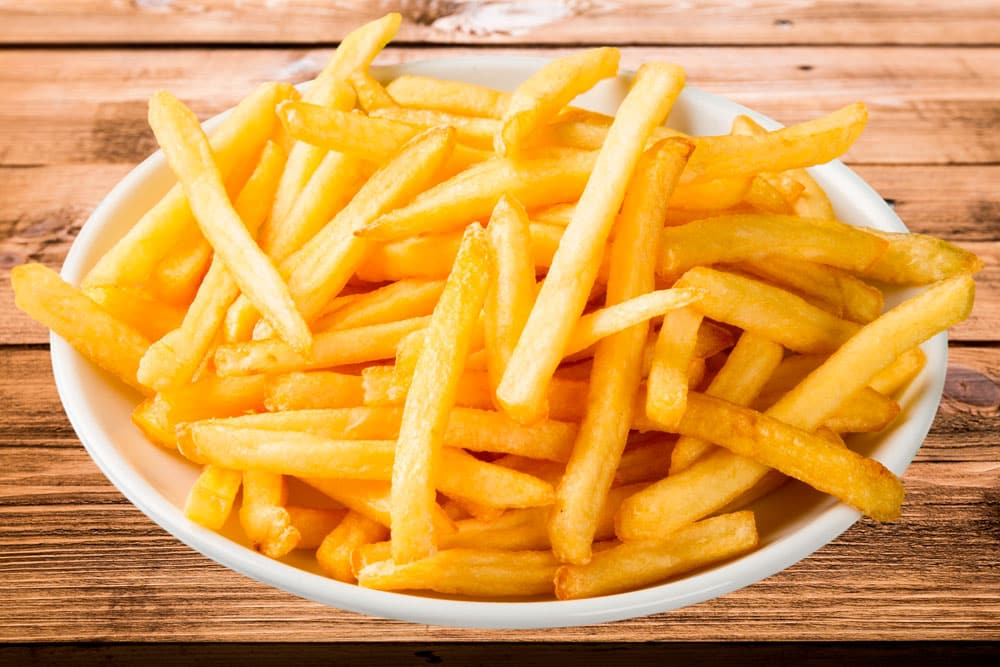

Papas Fritas: A classic side dish around the world

Description
Papas Fritas, otherwise known as french fries, a common side dish served
alongside main dishes throughout the world, particularly in North America,
South America, and Europe. They're best prepared crispy, salted, and alongside
a condiment.
Ingredients
- Medium Russet Potatos
- Olive Oil
- Salt
- Optional: shredded cheeses, spices, seasonings and Condiments of Choice
Instructions
- Cut the potatoes into large rectangular pieces using a knife.
- Boil those pieces until they become slighly bendy.
- Lay them in a single layer on a baking sheet, and soak them in oil.
- Next, bake them at 450 degrees fahrenheit for roughly 45 minutes.
- Remove the fries, flip them over, add more oil, and cook for 20 more
minutes, or until ready.
- Finish by adding salt, as well as any kind of shredded cheese, spices,
or seasoning.
- Serve alone or alongside condiment of choice.